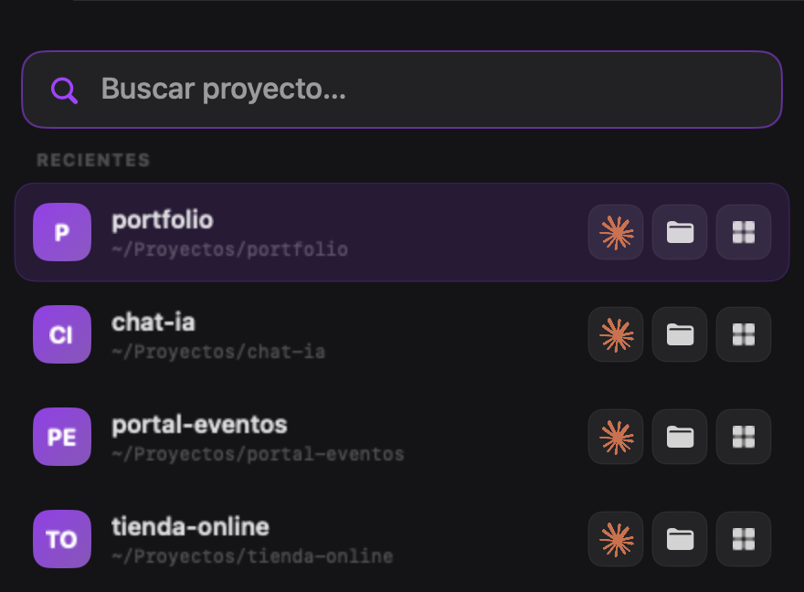
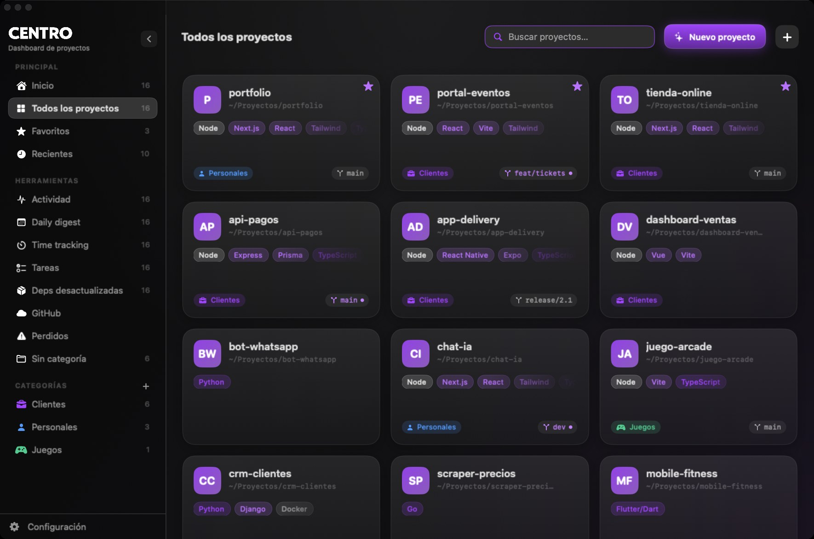

Search from the menu bar
Click the magnifying glass, type a few letters and choose: Claude Code, the folder or CENTRO. Enter opens the first option.

A native Mac app that finds any project from the menu bar and opens it where you work.
Click the magnifying glass, type a few letters and choose: Claude Code, the folder or CENTRO. Enter opens the first option.

claude --dangerously-skip-permissions
Keep it, or switch to claude or claude --continue. Opens in Terminal or iTerm2.
See which projects are running and on which port, and how much time each one takes.
Categories, favorites, detected stack and the git state of every project.

No account, no telemetry. Automatic backup on every launch. Removing a project never deletes files.
macOS 15 or later. Apple Silicon and Intel.
Get CENTRO-1.0.0.dmg, open it and drag CENTRO to Applications.
The first time, macOS blocks it because it is not notarized yet. Go to System Settings > Privacy & Security and click Open Anyway, or run:
xattr -dr com.apple.quarantine /Applications/CENTRO.app
Pick your language and how you open projects, then add the folder where you keep them.
MIT license. If it saves you time, leave a star. If something is missing, open an issue or send a pull request.